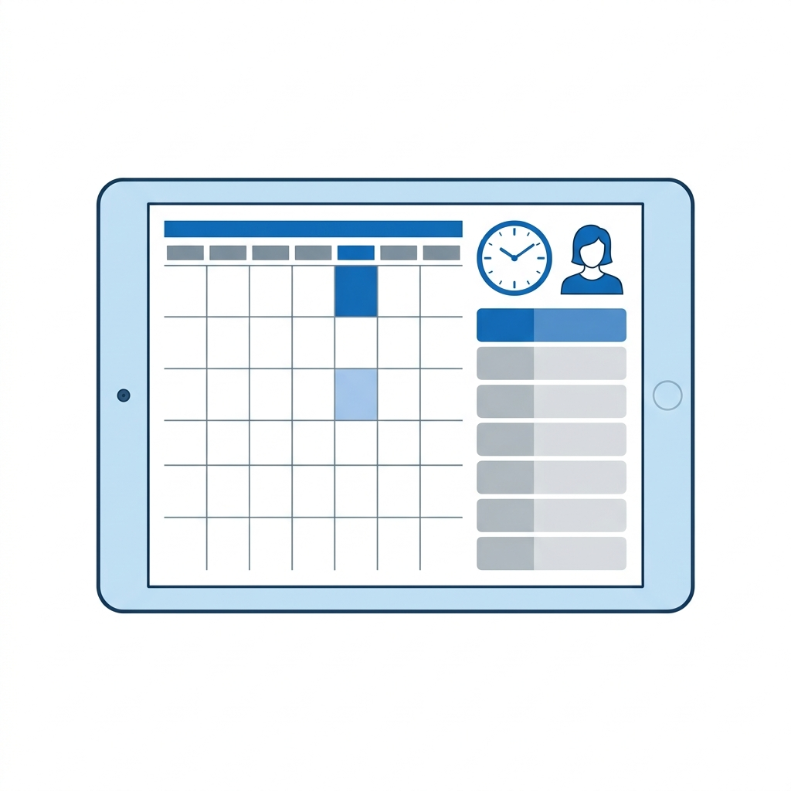
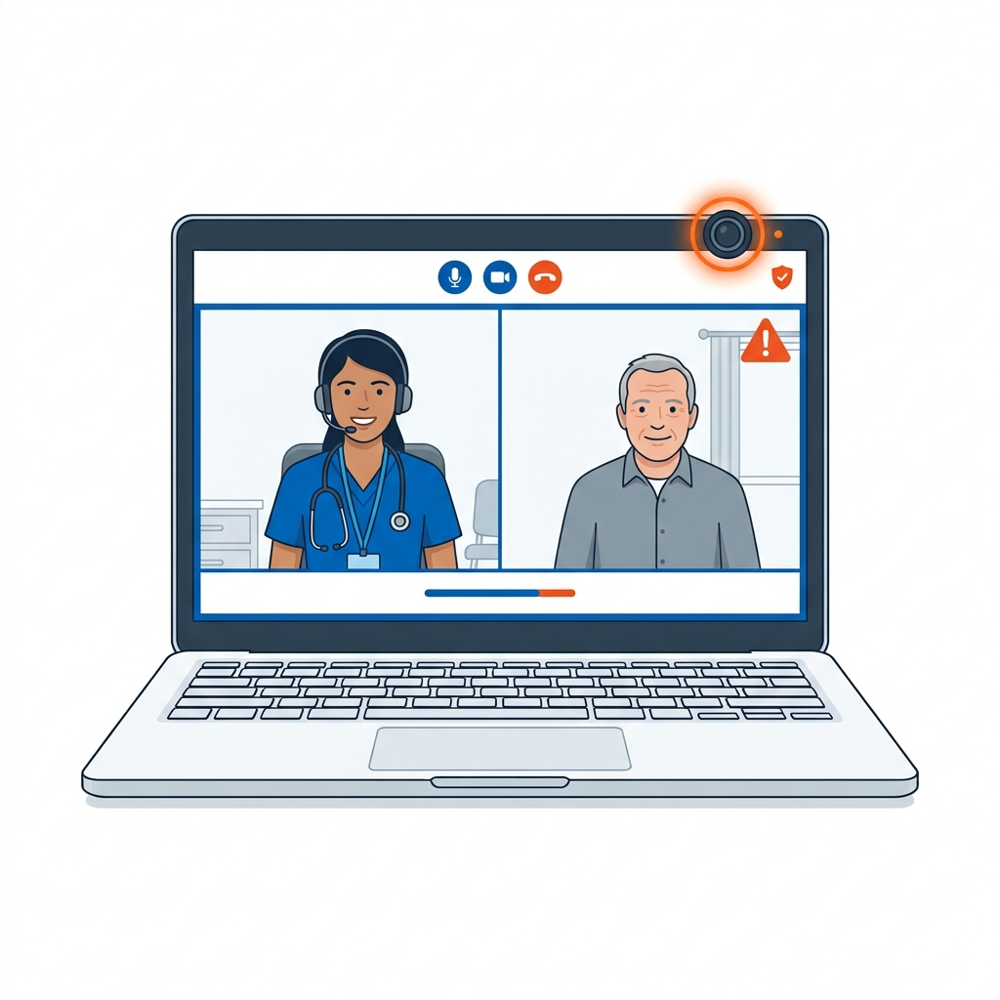
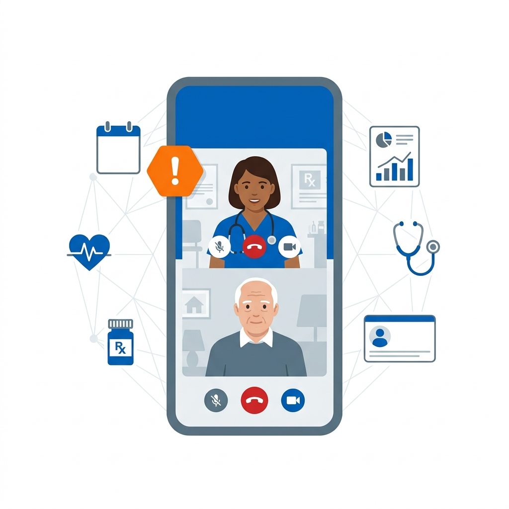
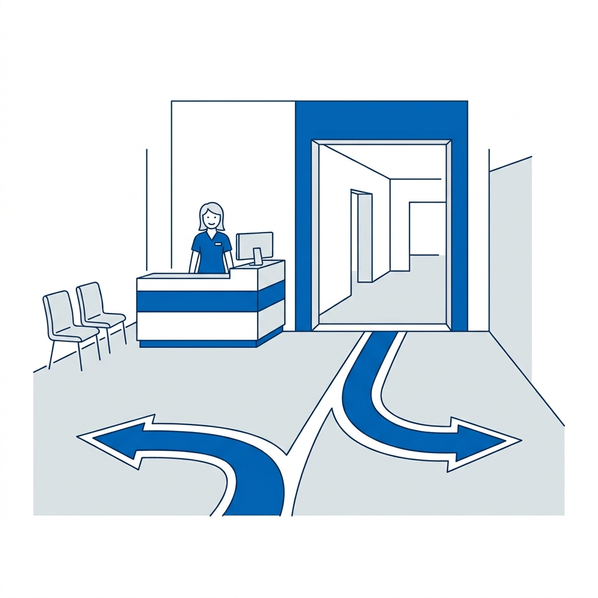
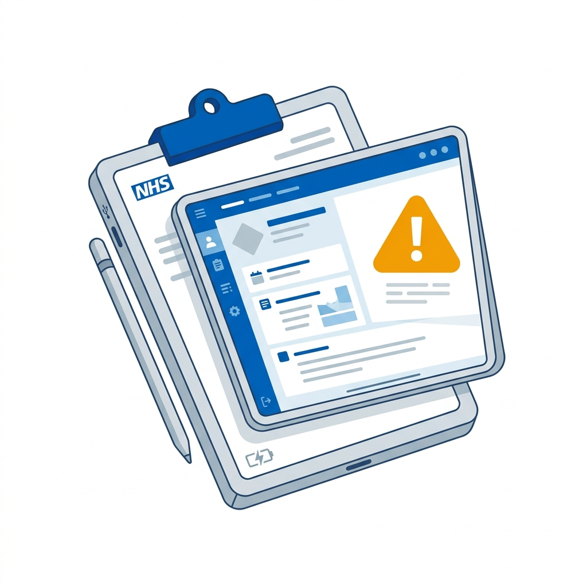

Tap each card to explore what occurred during this remote video consultation.


Tap to uncover the clinical and governance breaches against NHS England standards.

Breach: Assuming remote calls are exempt.
Under NHS England Dec 2025 guidance, visual intimate inspections (including chest, groin, or pelvic regions) over video require the exact same proactive chaperone offer as an in-person clinic visit.
Breach: No verification of the patient's setting.
Clinicians must actively confirm that the patient is in a secure, confidential environment and comfortable with the digital format prior to requesting any clothing adjustments.

Breach: Patient felt pressured without options.
Patients must always be offered alternative pathways, such as booking an in-person appointment with a chaperone or submitting an asynchronous still image via secure practice software.

Breach: "Video review completed" is indefensible.
Audit-ready EHR entries must document: the chaperone offer, patient decision, chaperone identity and clinical role, and explicit consent for visual assessment.